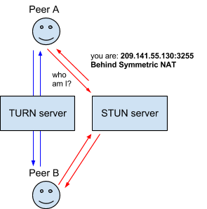
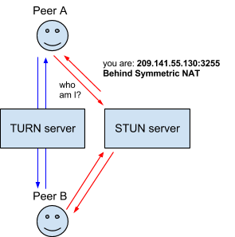

Web RTC
Wonderful world of Real Time Communication
on the web!
WebRTC
Collection of standards, protocols, and JavaScript APIs, the combination of which enables peer-to-peer audio, video, and data sharing between browsers (peers).
Web v/s WebRTC Architecture
- Connection Management
- Audio/Video processing capabilities
- Peer to Peer communication
- Security
- Bandwidth management
- ...
- ...
- ...
- hence...
- New APIs
- New Protocols
- New ...
Steps involved: Overview
3 Primary APIs
- MediaStream: Acquisition of Audio and Video streams
- PeerConnection: Communication of Audio and Video data
- DataChannel: Communication of arbitrary data
MediaStream
... streams of media data.
- Abstraction of actual audio/video data
- Can contain 0 or multiple tracks
- Each track has a corresponding MediaStreamTrack associated with it
- MediaStreamTrack represents content from one or more channels
- Use
navigator.getUserMedia()with optional constraints
Demo
Cool Stuff:
WebCam Toy
ASCII Camera
Chat Meat Spaces!
NAT, ICE, STUN, TURN, SDP...
aka.. Ocean of Acronyms!
ICE - Interactive Connectivity Establishment
- A framework to enable browsers to connect with peers
- Tries all possibilities in parallel
- Finds the best path to connect to peers
But why a framework??
Ideal World P2P

Real World P2P

ICE
- Tries to connect using the host address
- If that fails... which it will for devices behind NATs.
ICE moves on to...
STUN: Session Traversal Utilities for NAT

Symmetric NAT!
ICE moves on to...
TURN: Traversal Using Relays around NAT
 

SDP: Session Description Protocol
- Describes multimedia content of the connection
- Resolution, formats, codecs, encryption, etc.,
A sample SDP
v=0
o=- 7614219274584779017 2 IN IP4 127.0.0.1
s=-
t=0 0
a=group:BUNDLE audio video
a=msid-semantic: WMS
m=audio 1 RTP/SAVPF 111 103 104 0 8 107 106 105 13 126
c=IN IP4 0.0.0.0
a=rtcp:1 IN IP4 0.0.0.0
a=ice-ufrag:W2TGCZw2NZHuwlnf
a=ice-pwd:xdQEccP40E+P0L5qTyzDgfmW
a=extmap:1 urn:ietf:params:rtp-hdrext:ssrc-audio-level
a=mid:audio
a=rtcp-mux
a=crypto:1 AES_CM_128_HMAC_SHA1_80 inline:9c1AHz27dZ9xPI91YNfSlI67/EMkjHHIHORiClQe
a=rtpmap:111 opus/48000/2
...
RTCPeerConnection
- Abstraction for a communication channel between 2 users/browsers
- Configuration parameter to find access to STUN and TURN servers
Demo
RTCDataChannel
- P2P API to send and receive generic application data
- Works with PeerConnection API - low latency, fewer hops
- Draws inspiration from WebSockets
- RTCDataChannelInit is used to configure properties
- Secure and uses SCTP
DEMO
Cool Stuff:
Sharefest
Banana Bread
PeerCDN
Signaling
Revisited...- Process of coordinating communication
- Not implemented by WebRTC APIs
- Why?...
- To avoid redundancy
- To maximize compatability with existing technologies
- Also, avoids browsers having to maintain state!

3 types of information:
- Media session management
- Node's network configuration
- Node's multimedia capabilities
DEMO
WebRTC Libraries
Lot of options!